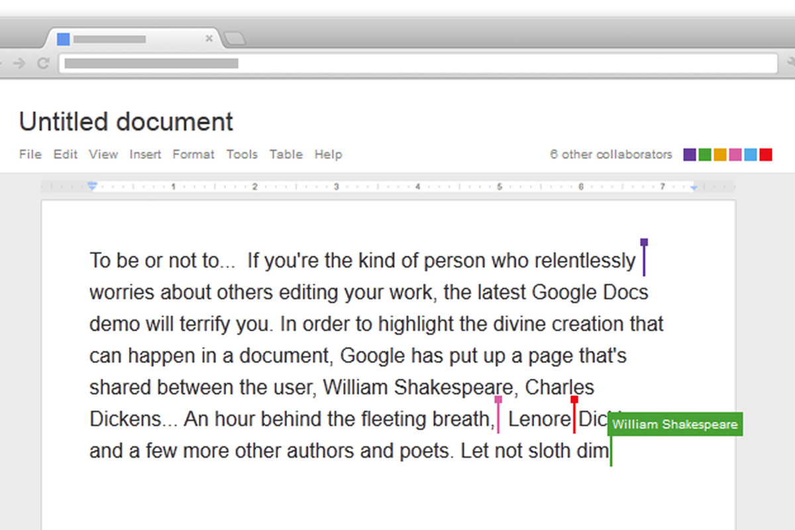

An intuition on branching and
collaborative workflows
| The what and the why and the how |
|
Git workflows in datasets |
Collaborative failures
"I can't continue my work on the project because my colleague is working on it at the moment" |
|
"I have such a good rephrasing of the discussion, but my PI wanted to work on this part of the manuscript for the past two weeks" |

|
"Alright team, I propose everyone reviews the proposal and adds changes and comments, and [poor scientific coordinator] will go through all documents and merge everything!" |
Collaboration in parallel improves things:
Your Git revision history is a timeline of changes


This timeline develops on a "branch" (by default "main" or "master")

Branch names
- Datasets can have unlimited branches, each with their own timeline of changes
- Each branch has a unique name, and this name serves as an identifier of the timeline
- The default branch is typically called main or master
- This default name can be configured in general using
git config --global init.defaultbranch main - Or initialized during dataset creation using
datalad create mydataset --initial-branch main - Running git status shows you which branch you're on
$ git status On branch main nothing to commit, working tree clean - Running git branch shows you which branch you're on and which other branches you have
$ git branch git-annex * main - The git-annex branch that datasets have is a bit special (more info later)
How to do branching - basic workflow and commands
|

|
How to do branching - basic workflow and commands
|

|
How to do branching - basic workflow and commands
history with its base branch but adds independent new changes |

|
How to do branching - basic workflow and commands
|

|
How to do branching - basic workflow and commands
- Transparency - Cleanliness - If sandboxing fails don't merge and your default branch stays orderly - Keep different preprocessing in parallel |

|
How to do branching - Time is fluid
from main? |

|
How to do branching - Time is fluid

computed when the fix has made it into preproc's timeline |

|
How to do branching - time is fluid
require sandboxing and won't lead to disorder can continue on main |

|
Summary - solitary branching
- Branching relies completely on Git commands. The most important are:
- git branch [branchname]
- Create a new branch
- git checkout [branchname]
- Switch to a different, existing branch
- git checkout -b [branchname]
- Create a new branch and switch to it (shortcut)
- git merge [branchname]
- Integrate the changes from one branch into the one currently checked out
- Some advantages of branching in a dataset only you work on are:
- Sandboxing developments
- Keeping parallel developments (e.g., different preprocessing flavours)
- Cleanliness and order, and slightly more exciting visualizations of your history

Branching workflows in collaborations
How to do branching - across time and space
the central sibling you can push your changes |

|
Detour: Authentication and access
-
There are three things you typically need to set up when using a repository hosting service:
- Have an account on that service
- Create a personal tokens for authentication
- Set up SSH keys to use the SSH protocol for repository access
Detour: Authentication and access
- Personal tokens for authentication
When creating a GitHub sibling for the first time, you need to supply a token:

Detour: Authentication and access
- Personal tokens for authentication
Clicking on the link takes you to the right place:

Detour: Authentication and access
- Personal tokens for authentication
It needs appropriate permissions to create or modify repositories:

Detour: Authentication and access
- Personal tokens for authentication
Once generated, copy it:

Detour: Authentication and access
- Personal tokens for authentication
... and supply it to the command line:

Detour: Authentication and access
- Personal tokens for authentication
This will have created a new (but yet empty) repository on GitHub:

datalad push sends the local dataset changes to upstream

How to do branching - across time and space
|
|
Detour: Authentication and access
- Set up SSH keys to use the SSH protocol for repository access
- Different protocols exist to synchronize changes between dataset siblings (e.g., pushing local changes upstream or pulling/updating from upstream). The most important ones are "HTTPS" and "SSH"
- If you want to use SSH (which can be more convenient), you need an account and an SSH key pair.
This is a set of two files with character gibberish.
You create them from the command line with an OS-specific command, e.g.
(see here for instructions for each OS)ssh-keygen -t ed25519 -C "your_email@example.com"
Detour: Authentication and access
- Set up SSH keys to use the SSH protocol for repository access
- One file is secret, one is public (ends with .pub).
- Add the contents of the public file to your GitHub account:

Detour: Authentication and access
- Set up SSH keys to use the SSH protocol for repository access
- One file is secret, one is public (ends with .pub).
- Add the contents of the public file to your GitHub account:

How to do branching - across time and space
URL right from GitHub:  name the sibling dataset upstream as well By default, the dataset one clones from is known as "origin" to the local clone |

|
How to do branching - across time and space
|

|
How to do branching - integrating other's changes
they need to create a fork of the repository under their account and clone & push there. |

|
 If collaborators are added,
If collaborators are added, How to do branching - integrating other's changes
|

|
How to do branching - integrating other's changes
|

|
How to do branching - integrating other's changes

|

|
How to do branching - integrating other's changes
|

|
How to do branching - integrating other's changes
|

|
How to do branching - integrating other's changes


Summary - collaborative branching
- Branching workflows ensure clean, parallel development by multiple people
- Collaborative workflows require a network of datasets:
- clone
- A dataset that was cloned from elsewhere.
- sibling/remote
- A dataset (clone) that a given dataset knows about. Can be established automatically (e.g., a clone knows its original dataset), or by hand (via "datalad siblings add --name [name] --url [url]" or "git remote add [name] [url]").
- fork
- A clone on a repository hosting site. “Forking” a repo from a different user “clones” it to your user account. Necessary when you don’t have permissions to push changes to the other users repository but still want to propose changes. Not necessary when you are a collaborator on the repository via the hosting service’s web interface.
- upstream vs origin
- Any clone knows its origin as a remote (by default called "origin"). A dataset can have multiple remotes (e.g., a different users’ dataset on GitHub, your own fork of this repository on GitHub). Convention: the original dataset on GitHub is "upstream", your fork of it is "origin". This involves adding a sibling/remote by hand and potentially renaming siblings/remotes (via git remote rename [name] [newname]).

Merge conflicts
- Merge conflicts arise when a file version-controlled in Git contains conflicting changes, for example when two collaborators modified the exact same line with different changes, and Git does not have a strategy to resolve the conflict
- A merge conflict indicates:
"Before I merge, help me choose which modification to keep"
- A merge conflict looks like this:
$ git pull upstream master 1 !
From github.com:adswa/mydataset
* branch master -> FETCH_HEAD
Auto-merging code/preproc.sh
CONFLICT (content): Merge conflict in code/preproc.sh
Automatic merge failed; fix conflicts and then commit the result.Tips for resolving merge conflicts
- git status can guide you through resolving the merge conflict. Run it frequently
$ git status 1 !
On branch preproc
You have unmerged paths.
(fix conflicts and run "git commit")
(use "git merge --abort" to abort the merge)
Unmerged paths:
(use "git add file..." to mark resolution)
both modified: code/preproc.sh
no changes added to commit (use "git add" and/or "git commit -a")"I'm in a merge conflict!"
How to emergency-abort
What to do next
Which files contain conflicts
Tips for resolving merge conflicts
- Take a look into the file(s), in an editor or from the command line. Git has special mark-up to indicate conflicting changes.
- "
<<<<<<<" followed by a refspec (e.g., HEAD, a branch name, a commit SHA) until "======" indicates one set of changes. - Everything after "
=======" until ">>>>>>>" followed by a refspec indicates the other set of changes
$ git diff
diff --cc code/preproc.sh
index fc3f8e8,14a0a13..0000000
--- a/code/preproc.sh
+++ b/code/preproc.sh
@@@ -1,3 -1,1 +1,7 @@@
++<<<<<<< HEAD
+this is a script for processing
+some parameter changes
+some more parameter tweaks
++=======
+ fixed paths!
++>>>>>>> 9217a4b101159e6b5aab0a548aeb75fb82cca798
This is your most recent change
This is a conflicting change
Tips for resolving merge conflicts
- To fix a merge conflict...
- Remove any lines you don't want to keep. You can keep lines from both change sets!
- Remove the "
<<<<<<", ">>>>>>", and "======" conflict mark-up afterwards
Example (both changes are kept):
$ git diff
diff --cc code/preproc.sh
index fc3f8e8,14a0a13..0000000
--- a/code/preproc.sh
+++ b/code/preproc.sh
@@@ -1,3 -1,1 +1,4 @@@
+this is a script for processing
+some parameter changes
+some more parameter tweaks
+fixed paths!
$ git add code/preproc.sh
(datalad) adina@juseless in ~/scratch/mydataset on preproc+ (merge)
$ git commit
[preproc 1cab31a] Merge branch 'master' of github.com:adswa/mydataset into preproc
Tips for resolving merge conflicts
- Merge conflicts are usually harmless
- As with many other problems, git status will tell you what to do next and which commands to run
- You could configure Git to use merge strategies resulting in fewer manual resolutions, e.g., "always keep my changes if others' changes conflict". More information: git-scm.com/docs/merge-strategies